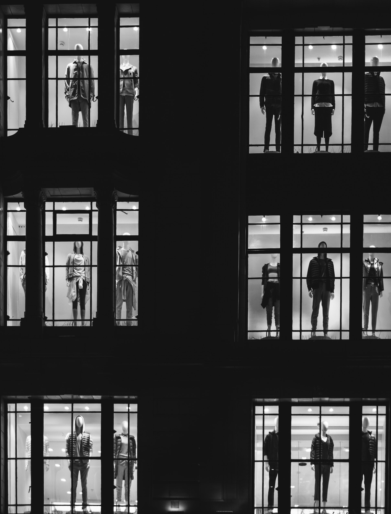

Adam Pokorný je studentem střední školy umění a designu. Je mu 17 let a miluje svou početnou rodinu a psa Irwina. Mezi jeho koníčky patří literatura, poezie a fiktivní světy jako například tvorba firmy Riot a DC. Má rád vaření a pečení.
Studium umělecké školy byl můj sen a cíl od velmi útlého věku, takže jsem rád, že mám možnost studovat na jedné z nich
Celkově bych řekl, že ano. Ale asi jako každý student někdy přemýšlím nad změnou.
Projevoval jsem zájem o umění už od dětství. Byl jsem i na základní umělecké škole.
Alexander McQueen, jeho designy bývaly jiné, než v té době a promlouvaly ke mně. Viděl jsem v nich „možnost“ oděvu. Jeho oděv nebyl jen oděv, ale i příběh a umělecké dílo.
Když jsem byl v posledním ročníku základní umělecké školy a rozhodoval jsem se, na jaký obor se budu hlásit, ekotextil mě zaujal na stránkách mé současné školy.
Navštívil jsem Asii – Kazachstán, Japonsko Afriku – Mauricius Evropu – Velkou Británii, Španělsko, Francii, Itálii, Rakousko, Chorvatsko, Maďarsko, Slovensko, Finsko a Řecko Chtěl bych navštívit každý evropský stát a rozhodně Mexiko
Nedokázal bych si vybrat kuchyni jen jednoho státu, všechny mají něco do sebe, až na Anglii.
Albert Camus – vše co jsem od něj četl, tak bylo velmi trefné a souhlasil jsem s jeho názory. Mám rád, jak přemýšlel sdílel svůj pohled na svět.
Poslechem rozborů knih uměleckých děl a filmových snímků. Taky relaxuji děláním mé práce, nikoliv té školní.
Ve vycházení s lidmi a v soustředěnosti.
Jako dítě jsem hrával tenis a plaval jsem. Zkoušel jsem toho mnoho, ale nic mě nebavilo dlouho. Momentálně teď nic nedělám.
Já sám, protože chci, aby na mě bylo pyšné mé mladší já. Čerpám z věcí, co se mi líbí a které objevím. Nemám jednoho člověka, co by mě inspiroval.
Naučil jsem se nelitovat a nevinit se v životě za věci. Ale samozřejmě jako každý člověk lituji maličkostí.
Silně uvažuji o studiu bohemistiky a literatury na Filozofické fakultě a rozvíjet se dále jako umělec.
Rozhovor jsem si užil a nad některými otázkami jsem se musel i zamyslet. Jsem rád, že jsem mohl být součástí tohoto rozhovoru.